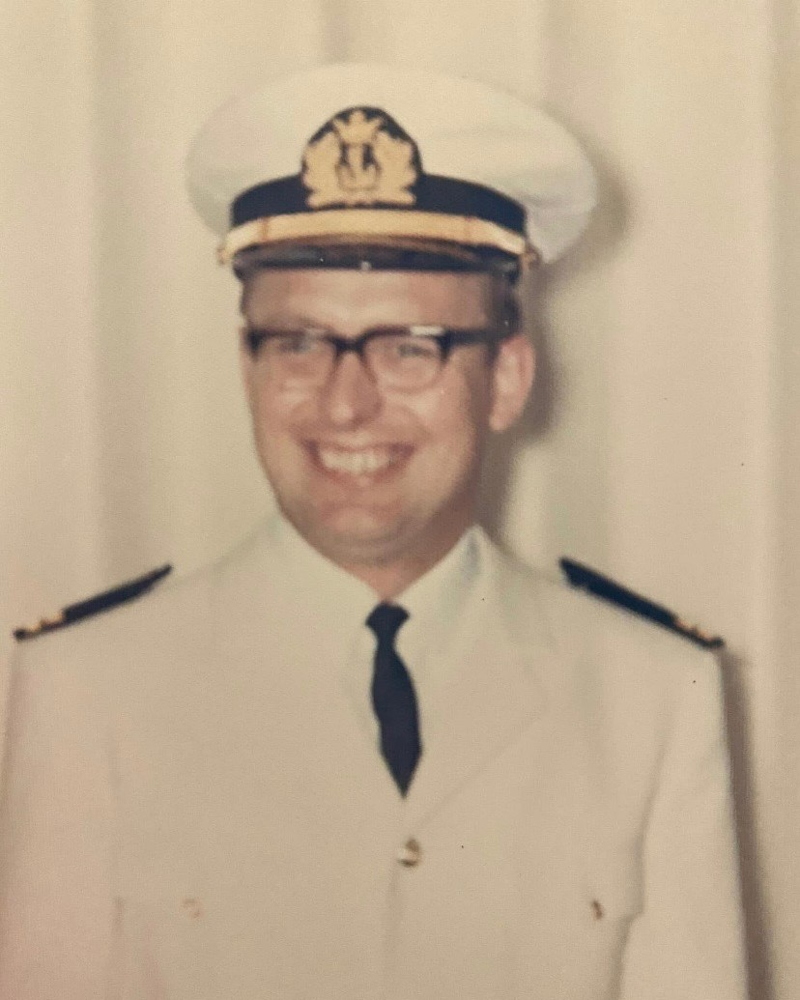

En handlekraftig og blid sørlending, ingeniør Jan Hansen, gikk bort 13. desember.
Jan ble født i Kristiansand 20. november 1940 og hadde for det meste sitt virke fra Tvedestrand og Arendal. Etter ett års praksis hos en byggmester tok han yrkesskolen, ett år på «mekanikken» og to år på «elektriken». Han jobbet hos bestefaren, elektriker Haakon Hansen, før militærtjeneste på Jørstadmoen og Gimlemoen.
Så begynte han som elektriker på sjøen, først på «Bohemund av Oslo», deretter på «Gerolda av Kristiansand», før «Libreville av Oslo» og «Hermion av Drammen». Han tok «teknikken» i Grimstad og ble ingeniør.
Han ble en betrodd sjefelektriker på «Starward» og «Sunward» før han begynte som konsulent i Norsk Hydro. Han var noen år i Hernis Scan Systems før han begynte i Tvedestrand Jernstøperi, hvor han etter hvert ble salgssjef med 200 reisedøgn i året. Da bedriften etablerte datterselskapet Golar Inc. i Coatsville PA USA ble han administrerende direktør. De siste årene av arbeidslivet jobbet han i Team Tec.

Jans pasjon og livslange kjærlighet, Diana Carol, døde i 2010. Begge var reiseglade. Jan besøkte 52 land og hadde alltid mye å fortelle. Hans andre pasjon var barna Reidun Carol, Nelli Jeanetta, som døde i 2024, Ralph Haakon og barnebarna. Han var opptatt av biler, som han hadde 37 av, og motorsykler. Mange var kjøpt brukt og billig, og alle kunne han fikse.
Lappen tok han på 16-årsdagen. Det var ikke bare datidens biltilsyn som gjorde unntak for Jan, som hadde imponert allerede som ung racerkjører på «Idda» i Kristiansand. Åmli pleie- og omsorgssenter tok inn den første motorsykkelen hans, så han kunne pusse og mekke på den da han ikke lenger kunne klare seg selv hjemme på Skarpevoll. Motorsykkelen kjøpte han som 21-åring, da han ville være nær datteren Reidun i Åmli. Jans siste ord til Reidun var: «Jeg har hatt et godt liv».
- Thor Einar Hanisch